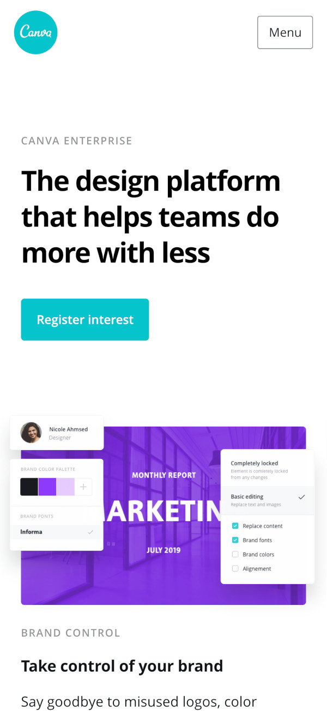

Canva for Enterprises marketing page

One of my first projects at Canva was a page that showcases the Canva Enterprise product. I was responsible for the dev work on its front page.
Update: So there’s a newer version of the page now. You can still see my project’s version on archive.org.
Project details- released
- 2018
- role
- developer
- platform
- Web
- tech
- HTML, CSS, JS
It had some cool animations.
The animations were implemented using a bunch of CSS 3D transforms, animations, and some JS to orchestrate it all.
Mobile view
I enjoyed animating the whole scene and doing all the little details (like how the shadows respond to the sheets’ heights).